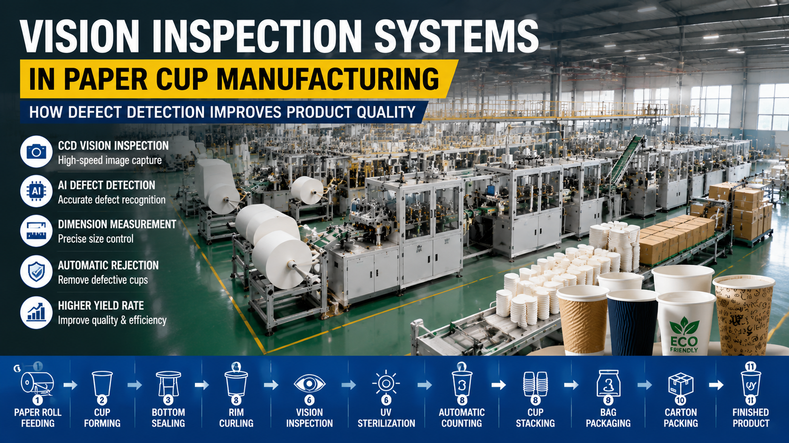

Vision Inspection Systems in Paper Cup Manufacturing: How Defect Detection Improves Product Quality
In modern paper cup manufacturing, product quality consistency is one of the most critical requirements for food packaging industries. Even minor defects such as leakage, deformation, dimension deviation, or surface contamination can lead to product rejection, customer complaints, or safety risks. Traditional manual inspection methods are no longer sufficient for high-speed production environments. Modern paper cup production lines now integrate advanced vision inspection systems based on CCD cameras, AI algorithms, and real-time defect detection technology. These systems enable manufacturers to detect defects instantly during production, ensuring stable quality, reducing waste, and improving overall production efficiency.

Summary
In modern paper cup manufacturing, product quality consistency is one of the most critical requirements for food packaging industries.
Even minor defects such as leakage, deformation, dimension deviation, or surface contamination can lead to product rejection, customer complaints, or safety risks.
Traditional manual inspection methods are no longer sufficient for high-speed production environments.
Modern paper cup production lines now integrate advanced vision inspection systems based on CCD cameras, AI algorithms, and real-time defect detection technology.
These systems enable manufacturers to detect defects instantly during production, ensuring stable quality, reducing waste, and improving overall production efficiency.
Technology
- Core technologies used in vision inspection systems:
- 1 CCD High-Speed Industrial Cameras
- 2 AI Image Recognition Algorithms
- 3 Machine Vision Lighting Systems
- 4 Real-Time Defect Detection Software
- 5 Edge Computing Processing Units
- 6 Dimensional Measurement Systems
- 7 Leakage Detection Algorithms
- 8 Shape Recognition Technology
- 9 Surface Defect Analysis
- 10 PLC Integrated Control System
- 11 Data Logging and Traceability System
- 12 Automatic Rejection Mechanism
- 13 Smart Factory Integration Interface
Challenge
Paper cup manufacturers face several quality control challenges:
1. Leakage Defects
Improper sealing can cause cup leakage issues.
2. Dimensional Deviation
Inconsistent forming leads to unstable product size.
3. Surface Defects
Common issues include stains, wrinkles, and deformation.
4. Human Inspection Limitations
Manual inspection is slow and inconsistent.
5. High-Speed Production Constraints
Manual quality checks cannot keep up with production speed.
6. Hidden Defects
Some defects are not visible to human inspectors.
7. Quality Variation
Batch-to-batch inconsistency affects product reliability.
Solution
Vision inspection systems solve these problems through automated detection technology.
Solutions include:
Real-time CCD imaging
AI-based defect recognition
Dimensional measurement automation
Leakage detection algorithms
Surface defect scanning
Automatic rejection system
Production data tracking
Integration with PLC systems
Smart quality reporting
Workflow & Layout
Inspection workflow in paper cup production:
Step 1
Cup Feeding into Inspection Station
↓
Step 2
High-Speed CCD Image Capture
↓
Step 3
AI-Based Image Analysis
↓
Step 4
Defect Classification
↓
Step 5
Dimensional Measurement Check
↓
Step 6
Leakage Risk Detection
↓
Step 7
Pass/Fail Decision Output
↓
Step 8
Automatic Rejection of Defective Products
↓
Step 9
Data Logging and Traceability Update
↓
Step 10
Approved Products Sent to Packaging Line
Results & ROI
- Implementation of vision inspection systems delivers measurable improvements:
- Defect Detection Rate:Up to 99.5% accuracy
- Product Quality Improvement:30–70% improvement in consistency
- Labor Reduction:40–80% reduction in manual inspection labor
- Waste Reduction:20–50% reduction in defective output
- Production Efficiency:10–30% improvement
- ROI Period:1–2 years
Equipment List
- Typical inspection system configuration:
- CCD Industrial Cameras
- LED Strobe Lighting System
- AI Vision Processing Unit
- Image Acquisition System
- Defect Detection Software
- PLC Control Interface
- Rejection Mechanism System
- Conveyor Integration System
- Data Storage Module
- Remote Monitoring System
- Calibration System
- Industrial Enclosure
Project Overview / Opening
As paper cup production speeds continue increasing, manufacturers face growing challenges in maintaining consistent product quality.
Traditional manual inspection methods are no longer capable of ensuring reliable defect detection in high-speed production environments.
Even small defects such as leakage, deformation, or surface contamination can lead to serious quality issues in food packaging applications.
To address this, modern manufacturers are adopting vision inspection systems that use CCD cameras, AI algorithms, and real-time defect detection technologies to ensure product quality during production.
Key Points
- 1. CCD High-Speed Imaging
- Industrial cameras capture high-resolution images of each product in real time.
- 2. AI Defect Detection
- Artificial intelligence identifies:
- Leakage defects
- Shape deformation
- Surface contamination
- Size deviation
- 3. Real-Time Decision Making
- Each product is instantly classified as:
- Qualified
- Defective
- 4. Automatic Rejection System
- Defective products are automatically removed from the production line.
- 5. Data Traceability
- All inspection data is recorded for quality analysis and production optimization.
Implementation / Workflow
Typical implementation process:
Phase 1Product inspection requirements analysis
Phase 2Camera and lighting system design
Phase 3AI model training and calibration
Phase 4System integration with production line
Phase 5Testing and accuracy validation
Phase 6Full production deployment
Customer Value / Results
Customers benefit from significant quality improvements:
Higher Product QualityDefect detection ensures stable output quality.
Reduced Labor CostsLess manual inspection required.
Lower Waste RatesDefective products are removed early.
Improved Customer SatisfactionConsistent quality reduces complaints.
Better Production VisibilityReal-time data improves decision-making.
Stronger Market CompetitivenessHigher quality enables premium market positioning.
Conclusion / Next Step
Vision inspection systems have become a critical component of modern paper cup manufacturing.
By combining CCD imaging, AI algorithms, and real-time defect detection, manufacturers can significantly improve product quality while reducing labor costs and production waste.
As production speeds continue to increase, automated inspection will become essential for maintaining competitiveness in the global packaging industry.
If you are planning a paper cup production line or upgrading your quality control system, our engineering team can help design a customized vision inspection solution and integrate it into your manufacturing process.
SEO Title
Vision Inspection Systems in Paper Cup Manufacturing | AI Quality Control & Defect Detection
SEO Description
Discover how vision inspection systems improve paper cup manufacturing quality through AI detection, CCD cameras, defect identification, and real-time quality control automation.
SEO Keywords
- paper cup inspection system
- vision inspection machine
- quality control in paper cup production
- paper cup quality inspection
- AI inspection system
- CCD inspection system
- paper cup defect detection
- industrial vision system
- paper cup manufacturing quality control
- automatic inspection machine
Related Blog
Start with Your Business Challenge
Tell us about your warehouse, factory, or production requirements. We'll help you explore practical automation solutions and relevant project references.